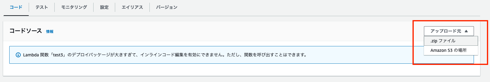
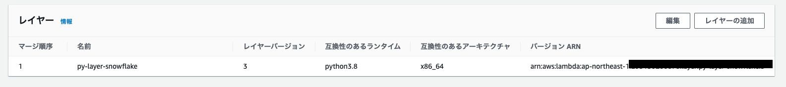

snowflake-connector-pythonをLambdaで使用する事前準備メモ
はじめに
snowflake-connector-pythonのようなLambdaで対応していないPythonライブラリを使用したい場合、下記のいずれかの方法を使用してLambdaを構成する必要がある。
- zip ファイルアーカイブ
- Lambdaレイヤー
- コンテナ
ネット上にあった方法で実行したところ、下記のエラーに悩まされ、1.zip ファイルアーカイブや2.Lambdaレイヤーのいずれも想定通りに動作しなかったので方法1と2のDockerを使ったzipファイルアーカイブ方法やLambdaレイヤー作成方法をメモしておく。
AWS Lambda: Unable to import module ‘python_handler’: No module named ‘_cffi_backend’
原因については、amazonlinuxのイメージではNGでaws-sam-cli-build-image-python3.8ではOKだったので、環境準備が不十分だったと思っている。
ここに至るまでに試した方法は下記の通り。
- [How to: Use Snowflake with AWS Lambda](https://oznetnerd.com/2020/11/11/lambda-packaging-the-right-way/)
- Lambda から Snowflake にシュッとつなぎたい！ - Qiita
- Lambda packaging the right way - OzNetNerd.com
- python - AWS Lambda: Unable to import module ‘python_handler’: No module named ‘_cffi_backend’ - Stack Overflow
実行環境
(base) jimazato@CJ2VQ9Y2M1 ~ % sw_vers
ProductName: macOS
ProductVersion: 13.0.1
BuildVersion: 22A400
(base) jimazato@CJ2VQ9Y2M1 ~ % docker --version
Docker version 20.10.21, build baeda1f
(base) jimazato@CJ2VQ9Y2M1 ~ % docker-compose --version
Docker Compose version v2.13.0
方法1:zip ファイルアーカイブを使用する
ファイルの配置
base) jimazato@CJ2VQ9Y2M1 snow_lambda_zip % tree
.
├── Dockerfile
├── docker-compose.yml
├── lambda_function.py
└── requirements.txt
Dockerfile
※ArmアーキテクチャのM1 Mac上でx86_64向けのPython環境を動作させるため、明示的に--platformを指定
aws-sam-cli-build-image-pythonはLamdbaで動作している環境とほぼ同一のようなので、イメージとして非常に大きい。なお、ここでイメージ指定を例えばamazonlinux:latestにした場合、上記で記載したAWS Lambda: Unable to import module 'python_handler': No module named '_cffi_backend'が自分の環境で出てしまった。
FROM --platform=linux/x86_64 amazon/aws-sam-cli-build-image-python3.8:latest
RUN yum update -y
RUN yum install python3 -y
RUN pip3 install virtualenv
RUN yum install zip -y
RUN yum -y install gcc openssl-devel bzip2-devel libffi-devel zip
docker-compose.yml
※ArmアーキテクチャのM1 Mac上でx86_64向けのPython環境を動作させるため、明示的に--platformを指定
version: '2'
services:
app_zip:
build: .
platform: linux/x86_64
volumes:
- '.:/var/task'
working_dir: /var/task
command: >
bash -c 'virtualenv env &&
source env/bin/activate &&
mkdir -p snow_lambda &&
cd ./snow_lambda &&
pip3 install -r ../requirements.txt -t . &&
zip -9 ../snow_lambda.zip ../lambda_function.py &&
zip -r9 /var/task/snow_lambda.zip .'
requirements.txt
snowflake-connector-python
lambda_function.py
中身は省略
コマンド
docker-compose build --no-cache
docker-compose up -d
snow_lambda.zipがカレントディレクトリに出来るので、これをLambdaにアップロードして実行する。
(base) jimazato@CJ2VQ9Y2M1 snow_lambda_zip % ls -l
total 67640
-rw-r--r--@ 1 jimazato staff 300 1 1 16:13 Dockerfile
-rw-r--r--@ 1 jimazato staff 419 1 4 09:14 docker-compose.yml
drwxr-xr-x@ 6 jimazato staff 192 1 4 10:04 env
-rw-r--r--@ 1 jimazato staff 1335 1 1 15:14 lambda_function.py
-rw-r--r--@ 1 jimazato staff 27 1 1 15:30 requirements.txt
drwxr-xr-x@ 44 jimazato staff 1408 1 4 10:05 snow_lambda
-rw-r--r--@ 1 jimazato staff 34570052 1 4 10:05 snow_lambda.zip

参考
方法2:Lambdaレイヤーを使用する
ファイルの配置
base) jimazato@CJ2VQ9Y2M1 snow_lambda_zip % tree
.
├── Dockerfile
├── docker-compose.yml
└── requirements.txt
Dockerfile
方法1とDockerファイルは変わらない。
※ArmアーキテクチャのM1 Mac上でx86_64向けのPython環境を動作させるため、明示的に--platformを指定
FROM --platform=linux/x86_64 amazon/aws-sam-cli-build-image-python3.8:latest
RUN yum update -y
RUN yum install python3 -y
RUN pip3 install virtualenv
RUN yum install zip -y
RUN yum -y install gcc openssl-devel bzip2-devel libffi-devel zip
docker-compose.yml
方法1とほぼ一緒のコマンドとなるが、lambda_function.pyはLambdaレイヤーには不要なので入れていないのと、/opt/python/配下に各ライブラリが配置されるように微修正。
※ArmアーキテクチャのM1 Mac上でx86_64向けのPython環境を動作させるため、明示的に--platformを指定
version: '2'
services:
app_layer:
build: .
platform: linux/x86_64
volumes:
- '.:/var/task'
working_dir: /var/task
command: >
bash -c 'virtualenv env &&
source env/bin/activate &&
mkdir -p python &&
pip3 install -r requirements.txt -t ./python &&
zip -r9 /var/task/layer.zip python'
requirements.txt
snowflake-connector-python
コマンド
docker-compose build --no-cache
docker-compose up -d
layer.zipがカレントディレクトリに出来るので、これをLambdaレイヤーにアップロードして実行する。
(base) jimazato@CJ2VQ9Y2M1 snow_lambda_layer % ls -l
total 67632
-rw-r--r--@ 1 jimazato staff 300 1 1 16:13 Dockerfile
-rw-r--r--@ 1 jimazato staff 336 1 1 22:53 docker-compose.yml
drwxr-xr-x@ 6 jimazato staff 192 1 4 10:06 env
-rw-r--r--@ 1 jimazato staff 1335 1 1 15:14 lambda_function.py
-rw-r--r--@ 1 jimazato staff 34608594 1 4 10:08 layer.zip
drwxr-xr-x@ 44 jimazato staff 1408 1 4 10:07 python
-rw-r--r--@ 1 jimazato staff 27 1 1 15:30 requirements.txt


参考
関連しているかもしれない記事
- AWS IAMポリシーのCondition句のStringEqualsに複数条件を記載する
- EC2(Amazon Linux)にDockerをインストール
- AWSのエンコードされたエラーメッセージを見る方法
- AWS BackupでEC2を復元しようとしたときの権限不足エラー
- AWS コスト管理のページで「このアクションを実行する権限がありません。」が表示される